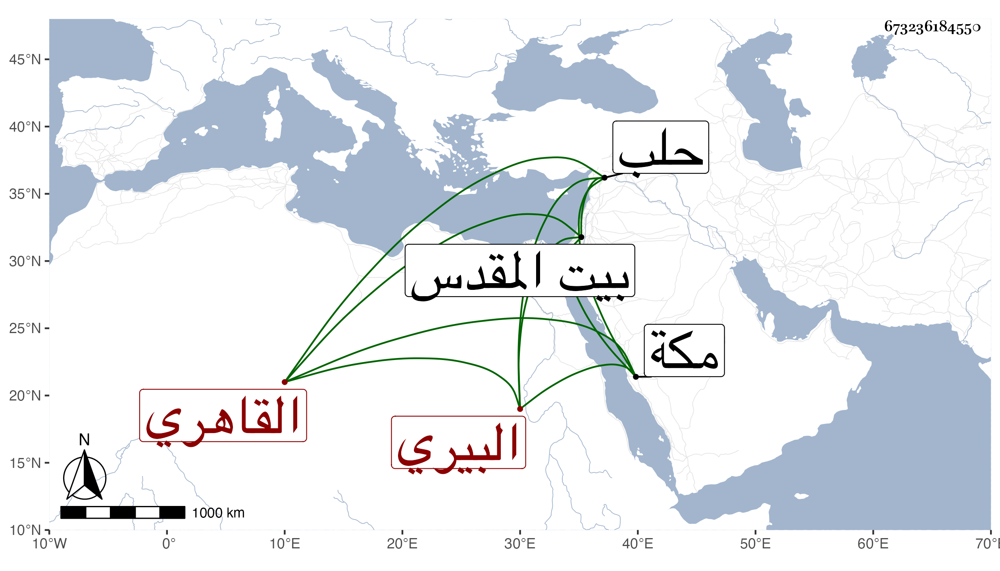

0902Sakhawi.DawLamic.ITO20230111-ara1.EIS1600.673236184550
Biography ID: 673236184550
737
محمد بن عبد الرحمن بن أحمد بن الجمال يوسف بن أحمد ناصر الدين ابن الزين البيري الأصل القاهري الماضي جده والآتي جد أبيه . ولد في ذي الحجة سنة اثنتين وثلاثين وثمانمائة ونشأ فقرأ القرآن وتكلم في أوقاف المدرسة الجمالية بعد القاضي معين الدين بن الأشقر سبط ابن العجمي فأتلفها إلا اليسير ، واستقر أحد الحجاب في أيام الظاهر خشقدم وباشرها وقتا ثم أعرض عن مباشرة الحكم فيها وقنع باسمها ، وحج ودخل حلب فما دونها وزار بيت المقدس وعرف بالفجور وعدم التصون والكلمات الساقطة والكذب وأكثر من مخالطة المحب بن الشحنة وبنيه وكذا صحب البقاعي وسمع الحديث على جماعة من المتأخرين ، وأرسل بعياله وبنيه لمكة بحرا مع الفارين من الطاعون فسلموا ومات أكبر أولاده المتخلف عنهم مع زوجته وقفل بغيبتهم وبموته بيته ، وبالجملة فهو معلوم الحال .
